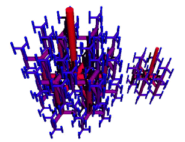

| Marc-Olivier Coppens of RPI has developed a program called Nature Inspired Chemical Engineering (NICE) to incorporate in chemical engineering design some of nature's solutions to mixing, transport, and reaction problems. | ||
| Here we mention one development, the fractal fluid injector. | ||
| Like the respiratory and circulatory systems, these injectors are scalable: the size of the network is governed by the number of levels of subdivision. For example, on both small and large trees the tiniest branches are about the same size, but the larger tree has more levels of branching. | ||
| ||
| The examples shown above have two advantages: | ||
| Injected fulid leaves all the outlets simultaneously, because all outlets are the same distance from the inlet. | ||
| The interface area between the fluids is increased significantly above that of traditional fluid injector geometries. | ||
| Here is a picture of a fractal fluid injector for a 3-dimensional tank, designed with dimension 2.6. Click the picture for an enlargement in a new window. | ||
|  | ||
| Why is the injector dimension less than 3? The goal is to fill the reaction vessel with the injected fluid, not with the fluid injector. An injector dimension less that 3 is one approach to this problem. Coppens explores others as well. |